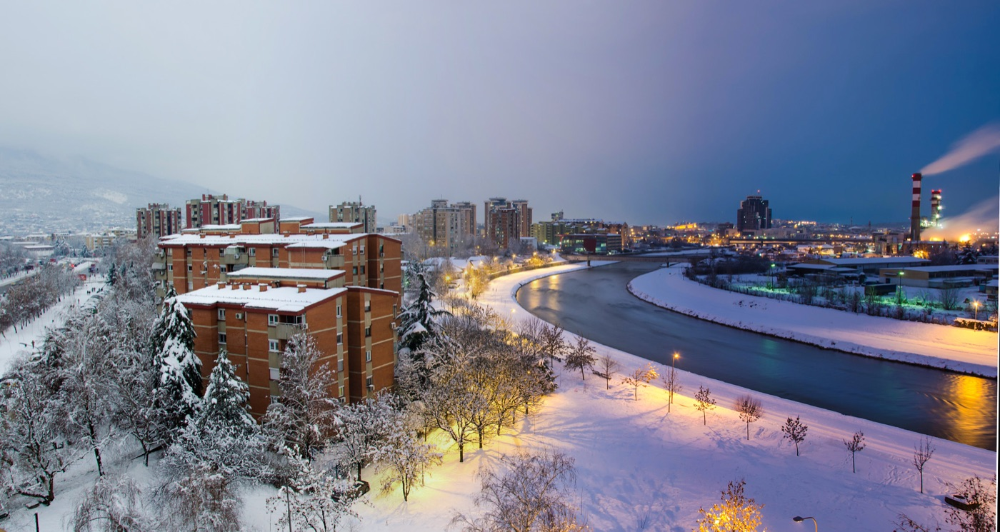

Parte 2
Itinerario
Due notti piene e tre mezze giornate, incastrate dentro nove ore di luce. Giorno per giorno, con i tempi veri.
ItinerarioParte 2
22
In breve
Il viaggio in una pagina
- Chi
- Sei adulti.
- Andata
- Ven 4 dicembre, Wizz Air, Bari 18:35 → Skopje 19:45.
- Ritorno
- Lun 7 dicembre, Wizz Air, Skopje 16:50 → Bari 18:00.
- Base
- Hotel London B&B, Nikola Kljusev 1, a 130 m da Piazza Macedonia. Le distanze della guida partono dalla piazza.
- Luce
- Alba 6:45, tramonto 16:05.
La logica del programma
Tre vincoli hanno deciso tutto, e non sono negoziabili:
- 1Il bazar si fa di sabato. La domenica le botteghe sono quasi tutte chiuse.
- 2Il Vodno si fa di sabato. La funivia è chiusa il lunedì e l'ultima salita è alle 16:45.
- 3Il lunedì è una giornata di strada. Tutti i musei sono chiusi: resta la spesa nel bazar.
Cosa resta fuori
Ocrida (tre ore a tratta) e Tetovo. E i mercatini di Natale, che aprono il 22 dicembre: p. 12.
ItinerarioParte 2
23
Giorno 1
Venerdì 4 · arrivo e cena tarda
- Atterraggio a Skopje 19:45
Con il solo bagaglio a mano si esce in quindici-venti minuti.
- Van prenotato → base 20:15
Venticinque minuti. In camera verso le 20:45. Cambiare in aeroporto solo il minimo.
- Cena da Skopski Merak 21:15
Debarca 51, a Debar Maalo: 18 minuti a piedi o 5 di taxi. Il venerdì è aperto fino a mezzanotte. Prenotare da casa. Pastrmajlija e griglia.
- Piazza Macedonia di notte 23:00
Rientro a piedi passando per la piazza illuminata e il Ponte di Pietra. Venti minuti che valgono la stanchezza.
Il trucco della prima sera
Date all'autista il codice del volo, non solo l'orario: se Wizz ritarda, lui lo sa prima di voi. E scaricate le mappe offline prima di partire da Bari: il roaming europeo qui non vale.
ItinerarioParte 2
24
Giorno 2
Sabato 5 · il bazar e il Vodno
La giornata piena. Tutta la mattina nella città ottomana, il pomeriggio in salita verso il tramonto. Si cammina circa sei chilometri, quasi tutti in piano tranne il Kale.
- Casa di Madre Teresa 10:00 · 45 min
Apre alle 10, ingresso e guida gratuiti. Prenotata da casa, perché siamo un gruppo. → p. 41
- Piazza e Ponte di Pietra 10:45 · 30 min
Il Guerriero a cavallo di giorno, poi si attraversa il fiume. → p. 37
- Vecchio Bazar 11:15 · 1 ora e mezza
Čifte Hammam, la via dei calderai, Kuršumli An. Caffè turco obbligatorio. → p. 47
- Pranzo da Destan 12:45 · 45 min
Dieci ќebapi a testa. Contanti.
- Moschea di Mustafa Pasha 13:30 · 30 min
Del 1492, con il giardino sopra il bazar. → p. 53
- Fortezza Kale 14:00 · 45 min
Gratis. Il giro dei bastioni con la città sotto. → p. 51
Attenzione all'orologio
Alle 14:45 si scende e si parte per il Vodno, con o senza il bazar finito. L'ultima salita della funivia è alle 16:45 e non si recupera il giorno dopo: domenica si va a Matka e lunedì la funivia è chiusa.
ItinerarioParte 2
25
Giorno 2
Sabato 5 · il tramonto dalla croce
- Verso Sredno Vodno 14:45 · 25-30 min
Due taxi (~300 MKD l'uno) o il bus 25 dalla stazione centrale.
- Funivia 15:20 · 7 min
100 MKD a testa. Ultima salita alle 16:45: non è il caso di arrivare al limite.
- Croce del Millennio 15:30 · 1 ora e un quarto
Sessantasei metri d'acciaio a 1.066 di quota. Tramonto alle 16:05. Vestitevi pesanti: lassù il vento morde. → p. 65
- Ultima discesa 16:45
In centro verso le 17:30.
- Cena da Pivnica An 20:00
Dentro Kapan An, nel bazar: birre locali e piatti tradizionali sotto le volte del caravanserraglio. Prenotare. → p. 57
Se la funivia non va
D'inverno capita che sia ferma per vento o manutenzione. Telefonate la mattina. Piano B: il pomeriggio al Memoriale dell'Olocausto (sabato fino alle 19) e al Museo Archeologico (fino alle 18), e il Vodno si tenta domenica dopo Matka.
Il trucco
Fatevi lasciare dal taxi alla stazione della funivia, non al parcheggio del Vodno di mezzo: sono due posti diversi e il secondo è più in basso.
ItinerarioParte 2
26
Giorno 3
Domenica 6 · il canyon di Matka
Mezza giornata fuori città. Domenica è il giorno giusto: il bazar sarebbe chiuso comunque, e Matka d'inverno non ha code.
- Partenza in van 09:00 · 30-40 min
Prenotato, con l'ora del ritorno già concordata. 50-60 € andata e ritorno per sei.
- La passerella sul lago 09:40 · 1 ora
Il camminamento scavato nella roccia fino al monastero di Sant'Andrea. → p. 67
- Barca alla grotta di Vrelo 10:45 · 2 ore
~400 MKD a testa. Da confermare il giorno prima: a dicembre le partenze dipendono dal meteo. → p. 68
- Pranzo sul lago 12:45 · 1 ora
Al ristorante dell'imbarcadero. Trota, šopska, birra.
- Rientro 14:00
In centro verso le 14:45, con un'ora di luce davanti.
Se le barche non partono
Non è una giornata persa: la passerella e il monastero valgono il viaggio da soli, e si rientra prima. Con il tempo guadagnato si aggiunge il Museo della Lotta Macedone nel pomeriggio, o il Vodno se sabato era saltato.
ItinerarioParte 2
27
Giorno 3
Domenica 6 · pomeriggio e sera
- Museo Archeologico 15:00 · 1 ora e mezza
400 MKD, aperto fino alle 18 (ultimi biglietti alle 17), visita guidata compresa. → p. 40
- I ponti illuminati 16:30 · 45 min
Il buio è già arrivato: Ponte dell'Arte, Ponte delle Civiltà, la riva sinistra riflessa nel fiume.
- Caffè o rakija calda 17:30
Sul lungofiume o sotto i portici della piazza.
- Cena 20:00
Soul Kitchen sul lungofiume (Kej 13-ti Noemvri 8, si prenota per telefono) o Kaj Serdarot sotto il Kale. → p. 45
Attenzione agli orari domenicali
Il Memoriale dell'Olocausto la domenica chiude alle 15: se lo volete, va fatto sabato. Il Museo Archeologico e quello della Lotta Macedone restano aperti fino alle 18.
Se piove
Si rovescia la giornata: musei la mattina, Matka il pomeriggio non si può. In quel caso Matka salta e si fa il giro dei quattro musei più la Galleria Nazionale nei due hammam del bazar. Vedi il piano B a p. 29.
ItinerarioParte 2
28
Giorno 4
Lunedì 7 · spesa e aeroporto
Mezza giornata, e un vincolo: il lunedì a Skopje è tutto chiuso. Musei, funivia, molte botteghe della parte bassa. Resta la città all'aperto, che è esattamente quello che serve l'ultimo giorno.
- Check-out, bagagli in deposito 09:00
Si lasciano le valigie e si esce leggeri.
- Colazione macedone 09:30 · 45 min
Burek tagliato a peso con yogurt da bere o boza, in una pekara vicino alla piazza.
- Bit Pazar e il bazar 10:15 · 1 ora e mezza
La spesa: peperoni secchi, tè di montagna, paprika, rame battuto a mano. Ajvar e rakija solo se qualcuno ha la stiva. → p. 58
- Ultimo pranzo 12:00 · 1 ora
Tavče gravče nel tegame, e un trileće per chiudere.
- Ritiro bagagli 13:30
- Van per l'aeroporto 13:45 · 25 min
All'aeroporto per le 14:15, due ore e mezza prima del volo.
- Volo per Bari 16:50
Atterraggio alle 18:00.
Il check-in del ritorno
Si apre sabato 5 alle 16:50, mentre siete già là. Fatelo quella sera dal telefono: dopo le 48 ore si paga.
ItinerarioParte 2
29
Piano B
Se piove, se nevica, se tira vento
A dicembre c'è circa una probabilità su cinque di pioggia o neve in un giorno qualsiasi. Tre delle cose principali del programma sono all'aperto: ecco con cosa si sostituiscono.
Al posto del Vodno
Memoriale dell'Olocausto (sabato fino alle 19, 100 MKD) e Museo della Lotta Macedone (fino alle 18, 300 MKD), vicini fra loro sulla riva sinistra. Con la nebbia la croce non si vede comunque: non insistete.
Al posto di Matka
Galleria Nazionale nei due hammam del bazar, Daut Pasha e Čifte: arte macedone dal Trecento sotto le cupole ottomane. Più il Museo della Macedonia accanto al Kuršumli An, con la sezione etnografica.
Al posto del bazar sotto l'acqua
Il centro commerciale GTC e i caffè sotto i portici della piazza: brutto a dirsi, ottimo a farsi. In alternativa il Museo della Città nella vecchia stazione, un quarto d'ora a piedi.
Le due telefonate che evitano i guai
La sera prima, sempre: le barche di Matka partono domani? e la funivia del Vodno è in servizio?. Sono le due uniche cose del viaggio che possono saltare senza preavviso.
ItinerarioParte 2
30
Registro
Cosa è cambiato
Questa pagina tiene traccia delle modifiche all'itinerario, con la data. Chi ha stampato una versione vecchia vede subito le differenze.
- 7 nov 2026
- Prima stesura dell'itinerario. Bazar e Vodno di sabato, Matka di domenica, lunedì di strada.
- 7 nov 2026
- Corretto l'orario della casa di Madre Teresa: apre alle 10:00 ed è chiusa il lunedì, non lun-ven 9-20 come risultava da una prima ricerca. Spostata a sabato mattina.
- 7 nov 2026
- Il Memoriale dell'Olocausto la domenica chiude alle 15: tolto dal pomeriggio di domenica, indicato come alternativa del sabato.
- 8 nov 2026
- Scelto l'albergo: Hotel London B&B, Nikola Kljusev 1, 130 metri dalla piazza.
Ancora da decidere
- 1Il transfer dall'aeroporto: c'è una prenotazione su Booking da riportare qui con l'orario.
- 2La cena di domenica: lungofiume o sotto il Kale.
- 3Il Museo della Lotta Macedone, se vale le 300 MKD o se basta l'Archeologico.
Come si modifica
L'itinerario è l'unica parte della guida che parla dei nostri giorni. Se cambia un giorno si corregge solo qui: i capitoli delle zone restano validi comunque, perché non nominano mai le nostre date.
ItinerarioParte 2
31
Crediti fotografici
Le foto di questo capitolo
Foto da Wikimedia Commons, pubblicate con licenze Creative Commons o in pubblico dominio. Mappe: Esri, HERE, Garmin e i contributori di OpenStreetMap. Dati stradali: OpenStreetMap.
- pr_vardar: Alex Spasov, CC BY 3.0, commons.wikimedia.org/wiki/File:Day_To_Night_Winter_Edition_(194132599).jpeg